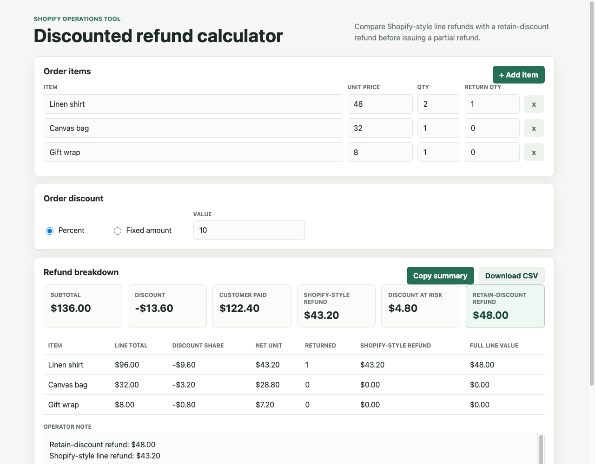

Shopify refund math
Calculate partial refunds on discounted orders
A quick calculator for merchants who need to compare Shopify's discounted line refund with a refund that preserves the original order-level discount on kept items.

Built for the awkward refund cases
Enter items, quantities, order-level discounts, and returned quantities. The calculator shows the Shopify-style refund, retain-discount refund, discount at risk, copyable operator note, and CSV export.
Discount-at-risk check
Retain-discount refund
Returned quantity caps
CSV export